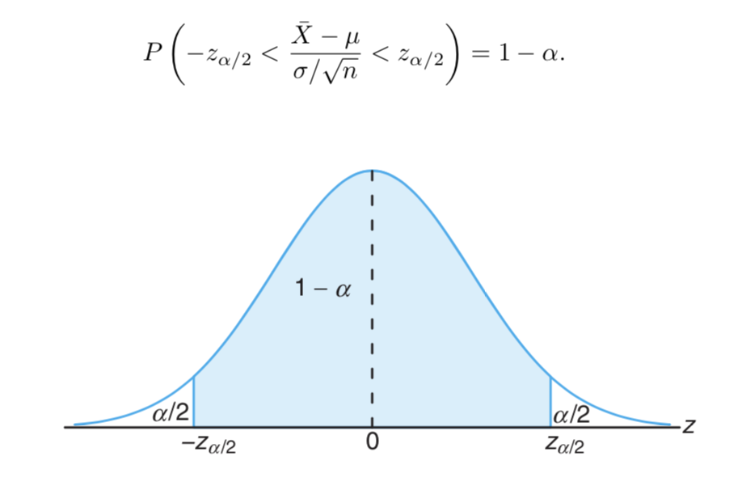

STAT 360 - Lecture 20
What we will cover this week:
- Introduction to Statistical Inference
- Classical Methods of Estimation
- Standard Error of a Point Estimate
- Single Sample: Estimating the Mean
Introduction to Statistical Inference
In the previous chapter, we knew the population parameters and used them to say something about the probability of getting the random sample we got given these known parameters.
However, knowing the population parameters a priori is not something that happens in reality.
Instead, we know statistics of our random sample and we want to use those statistics to infer our population parameters.
Recall that these parameters are quantities such as: mean, variance, proportions, etc. These quantities define a distribution.
So if we are careful and make a good estimation of the population parameters given our random sample, then we can use the distribution we found to solve further problems about that population!
As in several fields, there are usually two methods to approach problems: the classical method and the method that was invented later after people sat and thought some more.
In statistics, the latter one is called the Bayesian method and it does not invalidate the former classical method. It simply requires more "machinery" and it is more complicated to learn and apply.
We will focus on the classical method, which is still quite applicable, useful and easier to understand.
Inference can be split into: estimation and hypothesis testing.
You can read about the differences between the two in nuanced examples found in most statistics textbooks, but they are both about letting us infer from what population our random sample came from or didn't come from.
We will focus on estimation.
This is our last topic :(. I encourage you to learn about hypothesis testing and Bayesian methods on your own, or by taking future classes. By the way, consider taking more stats classes! You are well prepared for: STAT 423/523 and STAT 443 both offered next fall ;).Classical Methods of Estimation
A statistic $T = \mathscr{t}(X_1, \dots, X_n)$, that is used to estimate the value of the population parameter $\theta$ is called an estimator of $\theta$. An observed value of the statistic: $t = \mathscr{t}(x_1, \dots, x_n)$, is called an estimate of $\theta$.
Example: as we saw in chapter 8, given that the sampling distribution of the mean is normal in the limit, then maybe the sample mean is a good estimate for the population mean and as such the sample mean $\bar{X}$ is an estimator for the population parameter.
However, we must be careful because we don't really know the population and we want to make sure that we are not introducing biases or inconsistencies present in some estimators.
Unbiased Estimator
Definition: An estimator $T$ is said to be an unbiased estimator of a parameter $\theta$ if $E(T) = \theta$.
Otherwise, we call $T$ is a biased estimator of $\theta$.
As before, we can "create" populations, draw samples, and come up with a theory for what makes a good estimator, such as unbiasedness.
Bias
Example
Let's show that $S^2 = \frac{1}{n-1}\sum_{i=1}^{n}(X_i - \bar{X})^2$ is an unbiased estimator for the variance $\sigma^2$ of a distribution.
This can be done more easily by using another way of expressing $S^2$ seen in lecture 16:
$$S^2 = \frac{\sum_{i=1}^n X_i^2 - n\bar{X}^2}{n-1}.$$
$$=\frac{1}{n-1}\left(E\left(\sum_{i=1}^n X_i^2\right) - E\left(n\bar{X}^2\right)\right)$$
$$=\frac{1}{n-1}\left(\sum_{i=1}^n E(X_i^2) - nE(\bar{X}^2)\right).$$
Also, recall that $Var(X) = E(X^2) - (E(X))^2$ $\Rightarrow E(X^2) = Var(X) + (E(X))^2$.
So ...
$$E(S^2) = \frac{1}{n-1}\left(\sum_{i=1}^n (\sigma^2 + \mu^2) - n\left(\frac{\sigma^2}{n} + \mu^2\right)\right)$$$$ = \frac{1}{n-1}\left(n\sigma^2 + n\mu^2 - \sigma^2 - n\mu^2\right)$$
$$ = \frac{1}{n-1}\left(n - 1\right)\sigma^2 = \sigma^2.$$
Does Variance Play a Role?
Say that we have two different unbiased estimators $T_1$ and $T_2$ for the parameter $\theta$. Which one should we use?
Answer: choose the one with the minimum variance.
Role of Variance

Definition: Let $X_1, \dots, X_n$ be a random sample of size $n$ from a distribution $f(x; \theta)$. An estimator $T^*$ of $\theta$ is called a minimum variance unbiased estimator (MVUE) of $\theta$ if:
- $T^*$ is unbiased for $\theta$, and
- for any other unbiased estimator $T$ of $\theta$, $Var(T^*) \leq Var(T)$.
Questions
Consider a random sample of size $n$ from $f(x; \theta)$, the sample mean $\bar{X}$ and the trimmed mean introduced in chapter 1 (that is the mean with outliers chopped off), denoted $\tilde{X}$:- Is the trimmed mean an unbiased estimation for any distribution? Justify your answer.
- Considering a distribution for which both $\bar{X}$ and $\tilde{X}$ are unbiased estimators, which one is MVUE?
Biased may not imply bad estimator
The Standard Error
The standard error of an estimator $T$ is its stardard deviation: $\sigma_T = \sqrt{Var(T)}$.
It is the magnitude of a typical or representative deviation between an estimate and the value of the parameter $\theta$ being estimated.
If the population standard deviation is unknown, but can be estimated, then the estimated standard error $\hat{\sigma}_T = s_T$ can be reported instead.
Example
Given a normal distribution the best estimator for $\mu$ is $\bar{X}$. Let our sample size be $n = 20$. If we know that the standard deviation is 1.5, say, then $\sigma_{\bar{X}} = \sigma/\sqrt{n} = 1.5/\sqrt{20} = 0.335$.If we don't know $\sigma$, then we can calculate the standard deviation of the sample and use that instead.
Interval Estimation
Even if we are careful to come up with a good estimator, we are unlikely to estimate the true parameter exactly.However, we could be pretty "confident" that the true parameter falls within a specific interval.
An interval estimate of a population parameter $\theta$ is an interval of the form $\hat{\theta}_L < \theta < \hat{\theta}_U$.
$\hat{\theta}_L, \hat{\theta}_U$ are statistics of a particular sample based following its sampling distribution.
Confidence Interval
Let $X_1, X_2, \dots, X_n$ be a random sample of size $n$ from a distribution of $X$, and let $\hat{\theta}_L$ and $\hat{\theta}_U$ be sample statistics such that $\hat{\theta}_L \leq \hat{\theta}_U$. Let $\theta$ be a parameter of the distribution of $X$. The random interval $[\hat{\theta}_L, \hat{\theta}_U]$ is called a confidence interval for the parameter $\theta$ with confidence level $1 − \alpha$ (or $100\%(1 − \alpha)$) if $$P(\hat{\theta}_L \leq \theta \leq \hat{\theta}_U) = 1 - \alpha.$$"We can be $95\%$ confident that the population mean falls between $L$ and $U$."
As should agree with our intuition, the greater the confidence level, the more confident we can be that the confidence interval contains the actual population parameter.
Estimating the Mean of a Single Sample
Example
A random sample of 126 police officers subjected to constant inhalation of automobile exhaust fumes in downtown Cairo had an average blood lead level concentration of $29.2 \mu g/dl$.Assume $X$, the blood lead level of a randomly selected policeman, is normally distributed with a standard deviation of $\sigma = 7.5 \mu g/dl$.
Historically, it is known that the average blood lead level concentration of humans with no exposure to automobile exhaust is $18.2 \mu g/dl$.
Let's use the document camera to solve this question.
Interpretation of CI
It is incorrect to say:The probability that the population mean $\mu$ falls between the lower value $L$ and the upper value $U$ is $1 − \alpha.$
Why?
Some Confidence Intervals
CI Applet
CLT Consequences
If $\bar{x}$ is used to estimate $\mu$, then we can be $100(1-\alpha)\% $ confident that the error will not exceed $z_{\alpha/2}\frac{\sigma}{\sqrt{n}}$.Also, we can be $100(1-\alpha)\% $ confident that the error will not exceed $e$ when the sample size is $n = \left(\frac{z_{\alpha/2}\sigma}{e}\right)^2$.
Example
Monitoring of a computer system has suggested that response time to a particular command is normally distributed with std. dev. 25 millisec.
A new operating system has been installed, and we wish to estimate the true average response time $\mu$ for the new OS.
Assuming that response times are still normally distributed with $\sigma = 25$, what sample size is necessary to ensure that the resulting $95\%$ C.I. has a width of (at most) 10?
One Sided Confidence Bounds on $\mu$, $\sigma^2$ Known
If $\bar{X}$ is the mean of a random sample of size $n$ from a population with variance $\sigma^2$, the one-sided $100(1-\alpha)\%$ confidence bounds for $\mu$ are given by:
- upper one-sided bound: $\bar{x}+z_{\alpha}\sigma/\sqrt{n}$
- lower one-sided bound: $\bar{x}-z_{\alpha}\sigma/\sqrt{n}$
Example
In a sample of 123 hip surgeries of a certain type, the average surgery time was 136.9 minutes with a standard deviation of 22.6 minutes. Find a 98% lower confidence bound for the mean time.Case of $\sigma$ unknown
Example
It is assumed that the mean systolic blood pressure is $\mu = $120 mm Hg (from normal population). In the Honolulu Heart Study, a sample of $n = 100$ people had an average systolic blood pressure of 130.1 mm Hg with a standard deviation of 21.21 mm Hg. Is the group significantly different (with respect to systolic blood pressure!) from the regular population?Large Sample Confidence Interval
Example
A sample of 56 research cotton samples resulted in a sample average percentage elongation of 8.17 and a sample standard deviation of 1.42 (“An Apparent Relation Between the Spiral Angle $\phi$, the Percent Elongation $E_1$, and the Dimensions of the Cotton Fiber,” Textile Research J., 1978: 407–410). Calculate a 96% large-sample C.I. for the true average percentage elongation $\mu$. What assumptions are you making about the distribution of percentage elongation?Links:
For our last lecture please read sections 9.4 and 9.5 carefully and write a through summary. Do not read section 9.6
More practice problems:
9.1, 9.2, 9.3, 9.4, 9.5, 9.6
The last exam covers chapter 8 and 9.